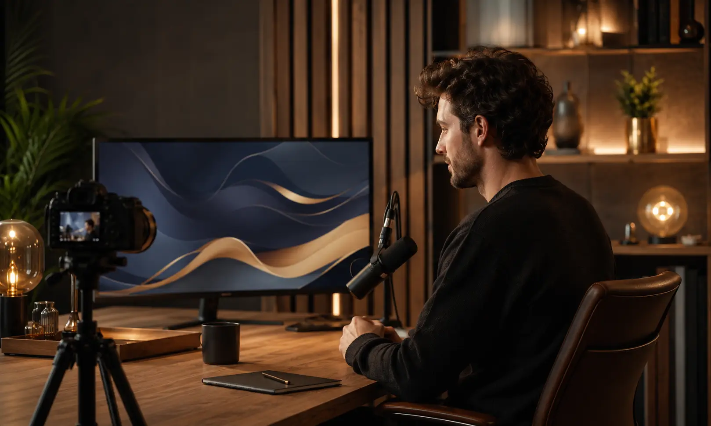
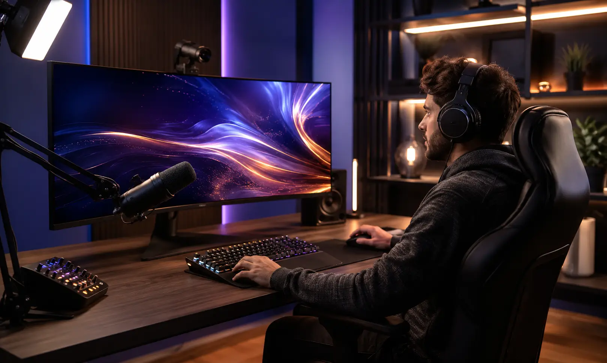
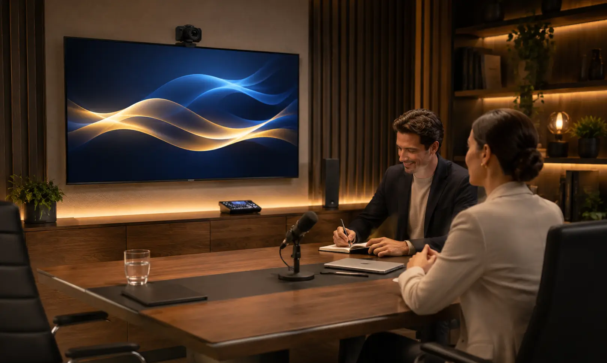
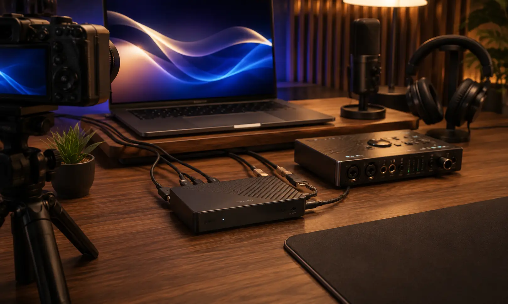
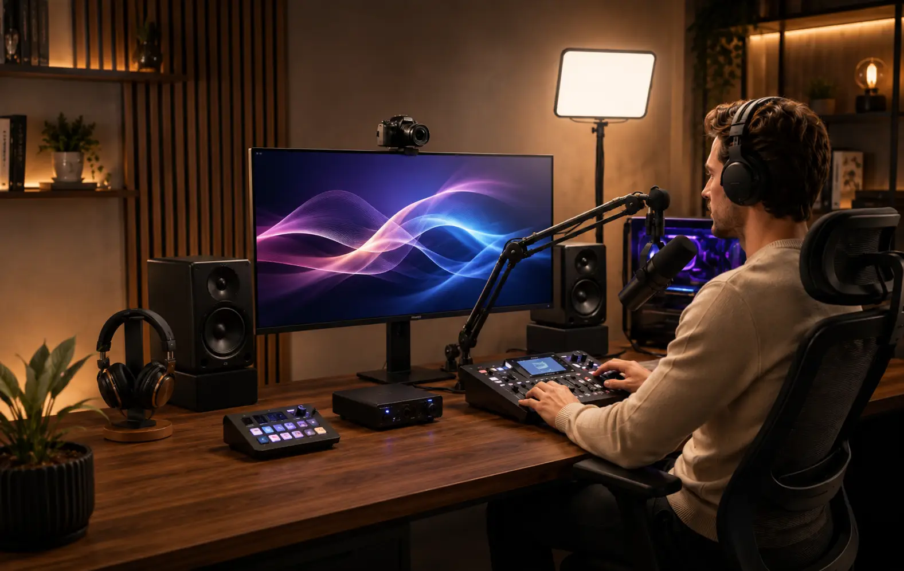

Audio y video para Streamers: captura, monitoreo y transmisión.
Diseñamos e integramos soluciones para streamers, gamers, creadores, clases
en línea, entrevistas y transmisiones de marca.
Antes de seleccionar equipos
revisamos voz, espacio, ruido, computadora, plataforma, resolución, cuadros por segundo,
cámaras, captura, entradas y salidas de audio, monitoreo, iluminación, red, velocidad de subida,
conectividad, alimentación eléctrica y flujo de operación.
Un buen stream depende de una cadena completa de audio, video y conectividad
Ruido, saturación, latencia, iluminación insuficiente, incompatibilidad entre cámara y capturadora, falta de entradas o una conexión de red limitada pueden afectar la transmisión aunque cada equipo funcione correctamente por separado.
Por eso revisamos el flujo completo: plataforma, resolución y frame rate, número de fuentes, audio, cámaras, captura, software, computadora, USB o video digital, monitoreo, iluminación, ancho de banda de subida, red cableada o inalámbrica y posibilidad de crecer.
Captura de voz adecuada
Micrófono, patrón polar, sensibilidad, distancia de trabajo, preamplificación y ganancia se definen según voz, espacio y ruido.
Video según plataforma
Cámara, lente, encuadre, iluminación, resolución y cuadros por segundo se definen según contenido, espacio y plataforma de salida.
Captura y red compatibles
Capturadoras, puertos, drivers, red y velocidad de subida se revisan para que sean compatibles con el flujo de transmisión previsto.
Operación definida
Ruteo, escenas, monitoreo, selección de fuentes y controles se organizan según el software y el personal que operará el sistema.
Una mala integración puede limitar audio, video, captura y transmisión
Micrófonos, interfaces, cámaras, capturadoras o iluminación seleccionados por separado pueden generar incompatibilidades de conexión, falta de ganancia, latencia, límites de resolución, pocos puertos, sobrecarga de la computadora o una red insuficiente para el bitrate de transmisión.
Nuestro enfoque parte de requisitos medibles: fuentes de audio y video, resolución, frame rate, bitrate, entradas y salidas, monitoreo, puertos disponibles, alimentación, software, red, distancia de cables y operación. Después seleccionamos los equipos compatibles.
Ruido y eco
Patrón polar, distancia, sensibilidad, ganancia o ruido del entorno mal considerados pueden reducir inteligibilidad y aumentar la necesidad de procesamiento.
Imagen poco profesional
Encuadre, óptica, exposición, iluminación y posición de cámara deben corresponder con el espacio, participantes y formato del contenido.
Captura inestable
Resolución, frame rate, HDMI/USB u otras interfaces, drivers, puertos y capturadoras deben ser compatibles con la computadora y el software.
Operación complicada
Una ruta de señal poco clara puede complicar monitoreo, cambios de fuente, grabación local, llamadas y recuperación ante una falla.
Integramos audio, video, captura, iluminación, red y control según tu formato de streaming.
La solución se define según contenido, plataforma, espacio, ruido, número de fuentes, resolución, frame rate, entradas y salidas, monitoreo, captura, computadora, software, red, energía, equipos existentes y presupuesto.
Micrófonos para streaming
Micrófonos dinámicos, de condensador, solapa u otras opciones seleccionados según voz, patrón polar, sensibilidad, movilidad, distancia de trabajo y ruido del entorno.
Interfaces y mezcladoras
Interfaces o mezcladoras seleccionadas según entradas, preamplificación, loopback, fuentes de juego o chat, salidas, monitoreo, grabación y conexión con la computadora.
Audífonos y monitoreo
Audífonos o in-ear definidos según aislamiento, comodidad, latencia del sistema, mezcla de referencia y tiempo de uso.
Cámaras y video
Cámaras web, PTZ o cámaras con salida de video seleccionadas según encuadre, óptica, resolución, frame rate, distancia y método de captura.
Iluminación y soportes
Iluminación funcional, difusores y soportes definidos según rostro, fondo, posiciones de cámara, espacio disponible, consumo eléctrico y control.
Capturadoras y cables
Capturadoras, adaptadores y cableado seleccionados según resolución, frame rate, interfaces disponibles, distancia, ancho de banda y compatibilidad con la computadora.
De la cámara al audio: un setup listo para transmitir
Podemos integrar micrófono, interfaz o mezcladora, monitoreo, cámaras, iluminación funcional, captura, red, soportes y cableado según el formato: gaming, directos, clases, entrevistas, streaming corporativo o creación de contenido.

Streaming de creadores
Gaming y gameplays
Streaming corporativo
Captura y producción
Solución integralUn proceso claro para crear tu setup de streaming
Un proceso estructurado para definir contenido, fuentes, captura, software, red, energía, cableado y equipos antes de cerrar el proyecto.
Entendemos tu contenido
Revisamos si será gaming, clases, podcast en vivo, directos, entrevistas, webinars, contenido corporativo o un formato mixto.
Revisamos el espacio
Consideramos espacio, ruido, fondo, iluminación, posiciones de cámara, computadora, puertos, energía, red, cableado y operación.
Diseñamos el setup
Definimos micrófono, preamplificación, entradas, salidas, monitoreo, cámaras, resolución, frame rate, captura, software, red, iluminación, soportes y cableado.
Cotización formal
Te entregamos alcance, equipos, servicios, tiempos, supuestos, exclusiones y pendientes técnicos por confirmar.
Integración
Realizamos suministro, conexión, configuración, pruebas y ajustes conforme al alcance aprobado.
Capacitación
Explicamos ganancia, monitoreo, selección de fuentes, escenas, captura, grabación y operación básica del sistema integrado.
No seleccionamos equipos aislados: diseñamos el flujo completo de transmisión
Un sistema de streaming requiere compatibilidad entre micrófonos, interfaz o consola, cámaras, capturadoras, iluminación, computadora, software, puertos, red y alimentación eléctrica.
Nuestro enfoque es dimensionar fuentes, entradas, salidas, captura, resolución, monitoreo y conectividad según el flujo real para evitar cuellos de botella y facilitar futuras ampliaciones cuando el proyecto lo permita.
Tecnología profesional para audio, video y streaming
- Definición del formato y plataforma
- Dimensionamiento de audio, video y captura
- Equipos originales y tecnología profesional
- Compatibilidad entre computadora, cámaras y señal
- Red, energía y cableado según proyecto
- Pruebas, ajustes y capacitación básica
- Capacidad de crecimiento según alcance
Marcas profesionales para soluciones de alto rendimiento
Seleccionamos tecnología profesional según audio, video, captura, resolución, conectividad, compatibilidad, software, red, operación y presupuesto.
Dudas comunes antes de equipar un setup para streamers
Estas son algunas de las variables que revisamos antes de definir el alcance técnico y la cotización.
Diseñemos tu proyecto de streaming
Compártenos contenido, plataforma, computadora, audio, cámaras, resolución, captura, iluminación, red y equipos existentes para revisar el alcance técnico.
Equipemos tu setup de
streaming
Podemos orientarte sobre microfonía, interfaces, consolas, monitoreo, cámaras, iluminación funcional, capturadoras, conectividad, red, software y actualización de un setup existente.
Solicita asesoría para tu setup de streaming
Completa el formulario y se abrirá WhatsApp con la información estructurada. Incluye plataforma, computadora, audio, cámaras, resolución, iluminación, capturadora, red y si buscas un sistema nuevo o una actualización.